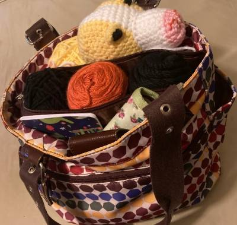

CROCHET
This is one of my favorite crafts to do. It is something that is easy to take with me anywhere I am going. I have a few different purses that make good crochet bags for easy travel. All you need is yarn, scissors, and a hook. All you need to do is learn a few basic stitches and you're able to start creating beautiful crafts. If you are interested in meeting with a group on zoom, I have a weekly crochet meeting on Thursday's at 6:00pm Pacific Time. If you are interested, contact me to get zoom room information.
